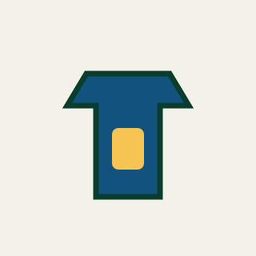

Getting Started Costs Less Than You Think
A complete beginner set — paddle, three balls and a clip-on net — costs about the same as a pair of running shoes. Below are the five items that matter, ordered by how much they change the way you play.
The Kit



Choosing a Paddle
Control
Slow, grippy rubber and a five-ply wooden blade. The best choice for the first year, because mistakes stay on the table.
All-Round
Medium sponge, around 1.8 mm thick. Enough speed to attack a loose ball without losing the ability to block.
Offensive
Carbon layers and 2.1 mm sponge. Very fast and very unforgiving — wait until your technique is consistent.
Specifications at a Glance
| Item | Requirement | Note |
|---|---|---|
| Ball | 40 mm, 2.7 g | White or orange, matte finish |
| Paddle faces | One red, one black | Colours must differ so spin can be read |
| Blade | At least 85% wood | Carbon layers are allowed within the limit |
| Table | 2.74 m × 1.525 m | 76 cm high, dark matte surface |
| Net | 15.25 cm high | Overhangs the side of the table by 15.25 cm |
Where to Next?
Go back to the Overview, or find out how a match is actually scored on the Rules page.